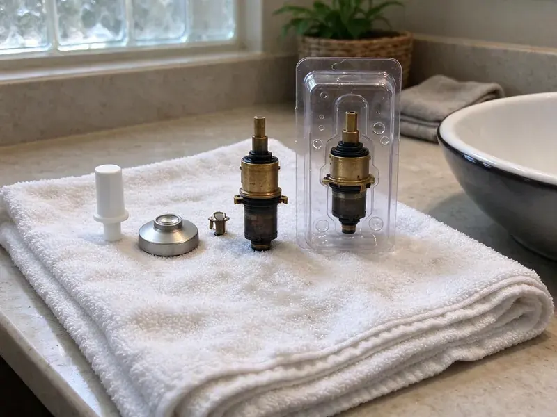

Faucet Repair in Reno, NV
A dripping faucet wastes water every minute. FMR Plumbing repairs kitchen, bathroom and tub faucets in Reno, NV with the right cartridge on hand.
- Guaranteed Work
- Next-Day Service
- Upfront Pricing
- Nearby Plumbers

Fast Faucet Repair in Reno, NV
Tell us the brand and we can bring the matching cartridge.
Faucet Repair for Reno, NV Homes
FMR Plumbing repairs dripping spouts, leaking handles, loose fixtures and faucets with weak flow, and we clean aerators clogged with mineral scale on every visit. Scale is the usual culprit. We replace cartridges, O-rings, seats or springs as needed.
Some of what we do:
- Restore even temperature control
- Sprayer and diverter repair for kitchen faucets
- Stop leaks at the base and handle

Additional Bathroom Plumbing Services in Reno, NV
From toilets to showers, our bathroom plumbing team in Reno, NV handles repairs, installs, and upgrades with tidy, code-compliant work.


Customers
Why Choose FMR Plumbing for Faucet Repair in Reno, NV?
A small faucet leak wastes more water than people expect, and a drip under the sink can soak the cabinet floor for months before anyone opens the door. We fix the cause, not the symptom. That usually means a new cartridge or washer, plus a dry cabinet.
- Hard Water Know-How, We know which parts last in hard water.
- Skilled Technicians, Our plumbers service every major brand and model.
- Full Inspection, We check supply lines and stops on every call.
Citywide Coverage
Small businesses in Reno get the same coverage as homes, including restroom faucets with metering valves or sensors and kitchen faucets in restaurants. Early visits before opening are available. We stock commercial cartridges as well.
Experienced Team
Senior plumbers train newer techs on stuck cartridges and seized stems until they can remove one without cracking the valve body or stripping the faucet. That takes practice. No one goes solo until they have it down.
Safety-First Approach
Permits are not needed for most faucet repairs, but changing supply lines inside the wall or adding a new fixture can bring in local code rules under Nevada plumbing standards. We tell you which applies. When one is required, we file it before work starts.
Trusted Certified Reno Plumbing Services Professionals
At FMR Plumbing, we are proud to offer certified plumbing services throughout Reno, NV. Credentials matter in this trade. Our plumbers hold recognized industry credentials, and they follow strict safety and quality rules on every repair, installation and maintenance call we run.
Call Us Now PHCC Plumbing Contractor Recognition
PHCC Plumbing Contractor Recognition Better Business Bureau (BBB) Accreditation
Better Business Bureau (BBB) Accreditation Angi Certified Pro
Angi Certified Pro ISO 9001 Quality Management Certification
ISO 9001 Quality Management CertificationFaucet Repair Services in Reno, NV
Emergency Faucet Repair in Reno
A faucet that will not shut off, or one with a cracked body spraying under the sink, needs the water off before anything else happens. Turn the two small valves under the sink clockwise. If they will not turn, use the main shutoff for the house. We come fast for these.

Low Water Flow Faucet Repair in Reno
Sputtering flow, where the water spits and surges, often means air or debris in the line after a water main repair, or a partly clogged cartridge screen. A flush of the lines usually fixes it. Pull-down faucets also have check valves in the hose that can stick, and we clean or replace those.
Faucet Repair Versus Replacement in Reno, NV
A new cartridge usually costs well under the price of a new faucet and can add years of life, as long as the faucet body is sound and parts are still made. Cracked or discontinued faucets are different. We give you both prices so the choice is yours.
Commercial Faucet Repair in Reno, NV
Restaurant and office faucets cycle hundreds of times a day, so cartridges, handle springs, metering valves and sensor solenoids wear out far faster than they do in a house. Commercial cartridges are on the truck. We set metering faucets to run long enough for a full rinse without wasting water, and we can work after hours.
Tub Spout and Diverter Repair in Reno, NV
Water still running from the tub spout while the shower is on means the diverter is worn, either the gate inside the spout or a diverter stem in the valve. There are slip-on and threaded spouts. We measure the pipe stub and bring the right style, and the fix gives you full pressure at the showerhead again.
Delta and Moen Faucet Repair in Reno, NV
Delta and Moen are the faucets we repair most, and both back their cartridges with lifetime warranties for the original owner on many models. Ask us to check. Kohler, Pfister and American Standard each use proprietary cartridges, and we stock the common ones for each brand.
Compression Faucet Repair in Reno
Two-handle faucets with separate hot and cold handles are often compression faucets, which seal by pressing a rubber washer down onto a brass seat inside the valve. Washers harden and seats get pitted. We replace the washer and dress or replace the seat with a seat wrench, and the packing gets redone if the stem leaks.

Faucet Handle Repair and Replacement in Reno, NV
Stripped handle splines, cracked handle bodies, worn adapters and loose set screws make a faucet hard to turn or impossible to shut tight. Many brands sell the handle on its own. We match the handle to the stem or cartridge and the finish, and if the stem itself is stripped we replace it at the same time.
Faucet Repair Near You in Reno, NV
Local plumbers know the faucets that show up most in Reno homes, from builder-grade single-handle kitchen faucets to older two-handle bath faucets with compression stems. That shapes what we carry. Most repairs need nothing we do not already have.
A near-me search turns up call centers that hand your job to whoever is free, but we send our own licensed plumbers across Reno, NV. The plumber who shows up works for us. They explain the problem before they fix it.
FMR Plumbing at a Glance
- Fully licensed plumbing team covering Reno, NV
- Same-day appointments and 24/7 emergency response
- Clear written estimates, no hidden fees
- 4.8-star rated by 903+ Nevada customers
Reno Map
Reno Information
- Population
- 274,915
- Area codes
- 775/530/415
- Service area
- Reno and towns within a 40 mile drive
- Nearby
- Sun Valley, Sparks, Carson, Fernley
Mineral deposits crust over aerators, showerheads and valves, which is why softeners and regular water heater flushing are popular. An early faucet repair in Reno keeps scale from locking up the cartridge and keeps drips out of the sink cabinet.
Talk to a Plumber
Reach out to FMR Plumbing for reliable plumbing work done by licensed pros in Reno, NV.
Our Specialized Plumbing Services in Reno, NV
At FMR Plumbing, you get every kind of plumbing service from one company across Reno, NV. From leak detection to full system installs, our team works fast and charges fair prices on homes and commercial properties alike. Explore our core services below:


What to Expect From a Faucet Repair in Reno, NV
We find the cause, replace the worn part and test it before we leave.
Call or Book Online
Call (725) 360-1766 or use the form. Describe what the faucet is doing and we set a time.
Find the Cause
A licensed plumber at your Reno home takes the faucet apart and finds the worn part.
Repair and Test
Once you approve the price, the new parts go in and test hot, cold and flow.
Frequently Asked Questions About Faucet Repair in Reno
Most repairs cost $125 to $300 with the cartridge or seals and labor included, and complex kitchen or touchless faucet repairs can run $200 to $400. You pay one flat price. It is set before we start.
Yes. Mineral deposits crust over aerators, showerheads and valves, which is why softeners and regular water heater flushing are popular. Scale clogs aerators, wears cartridges and dulls chrome and brushed finishes over time. Cleaning the aerator now and then helps a lot.
A worn cartridge, washer or valve seat is behind almost every drip. Hard water scale speeds up that wear, which is why faucets in some homes start dripping after only a few years while others go a decade or more without trouble. Replacing the worn part stops it.
On an older compression faucet, a washer swap is a fair DIY job if you can find the right washer and the seat underneath is smooth. Cartridge faucets are trickier. A stuck cartridge can crack the valve body if forced, which turns a repair into a new faucet.
Mineral deposits clog aerators, showerheads and valves, which is why softeners and regular water heater flushing are popular. Calcium and magnesium in hard water build up inside cartridges and aerators, stiffen moving parts and scratch the seals until the faucet drips. Water flow drops as well. An aerator cleaning every few months slows it down.
It can. One drip a second wastes more than 3,000 gallons a year, which is roughly the water used in 180 showers and enough to notice on the bill. Replacing the washer or cartridge ends it.
Over time, yes. Scale wears cartridges, clogs aerators and dulls the finish, and a water softener plus regular aerator cleaning can add years to a faucet in a hard water home. Vinegar soaks help with aerators.
Delta, Moen, Kohler, American Standard and Pfister cover most of what we see in Nevada homes, and we stock their common cartridges. Other brands are fine too.
Hear From Customers Who Hired Our Plumbing Experts

Megan L.
Our upstairs tub drained so slowly that every shower turned into a bath. FMR Plumbing pulled a wad of hair out of the stopper and then snaked the line past the trap. Three months later it still drains fast.
Drain Cleaning · Carson, NV
Greg S.
I manage a small strip center with six tenants. FMR Plumbing handles our annual backflow testing and fixed a recurring clog in the shared sewer line that had been backing into the nail salon. Their reports come in clean and on time.
Commercial Plumbing · Carson, NV
Angela D.
Our sump pump quit during a storm and the water was an inch from the basement carpet. FMR Plumbing put in a new pump with a battery backup that same evening. We have had two heavy rains since. It kicked on both times.
Sump Pump · Reno, NV
Robert G.
The camera showed a full break in our clay sewer line near the street. FMR Plumbing replaced it with a trenchless pipe burst, so the only digging was two small pits in the yard. They let us watch the footage before and after.
Sewer Line Replacement · Fernley, NVPatricia H.
We had a slab leak that two other companies could not find. FMR Plumbing located it in under an hour with a listening device. They rerouted the line through the attic instead of breaking up the floor, so we kept our kitchen tile.
Slab Leak Repair · Fernley, NV
Nathan E.
Our tankless heater kept throwing an error code and shutting off mid shower. The tech flushed the heat exchanger, which was full of scale, and replaced a bad flow sensor. Hot water has been steady for half a year now.
Water Heater Repair · Pahrump, NV